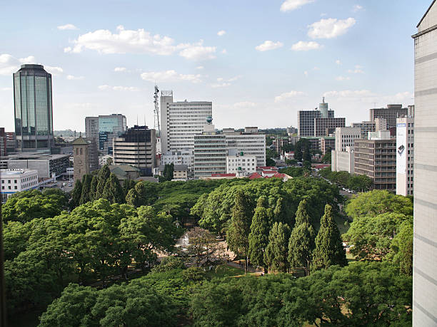

MarryGold Ndlovu | WDD 130
Hello ! My name is MarryGold Ndlovu and I am from Bulawayo, Zimbabwe. I enjoy horse riding and reading novels. Most importantly, I love spending time with my family.
Zimbabwe

Zimbabwe is a land locked country situated in the Southern Region of Africa also known as the Global South. its Capital City is Harare, Bulawayo being the second largest City known as the City of Kings. The most enormous buildings are found in Harare. The country's popular tourist attraction resort is Victoria Falls , although, there are other resorts such as the Nyanga Mountains in the Eastern Highlands, Great Zimbabwe in Masvingo and the Kariba dam located in Kariba.
© "2024"🐎 MarryGold Ndlovu🐎 Bulawayo, Zimbabwe